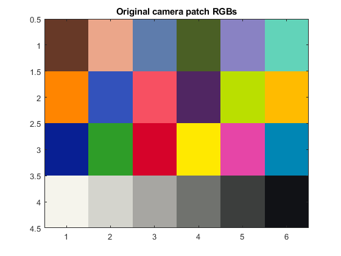

Credits
Team #: 1 | Authors: Cooper White & Gian-Mateo Tifone | Date: 11/02/2023
Contents
- Step 1 - Initialize
- Step 2 - Import CC
- Step 3 - Filter out Camera's gray and flip
- Step 4 - Import Munki LAB and XYZ
- Step 5 - Plot Grayscale Y vs RGB
- Step 6 - Linearize RGB resposne
- Step 7 - Plot RS Scalars vs RGBs
- Step 8 - Plot the Color Checker Pre/Post Linearized
- Step 9 - Estimate XYZ from RSs
- Step 10 - Estimate XYZ of CC
- Step 11 - Create a camera model + analyze error
- Step 12 - Improved Camera Model with Non-Linear Relationships
- Step 13 - estimate XYZs from RGB and RS
- Step 14 - Evaluate accuracy of Camera Model
- Step 15 - Save Extended Camera Model
- Step 16 - Camera XYZ from improved model
- Step 17 - Visualize the munki-measured XYZs as an sRGB image
Step 1 - Initialize
clear
disp("Hello Jim :D", newline)
Hello Jim :D
Step 2 - Import CC
cie = loadCIEdata; Camera.RGBNorm = importdata('CameraRGB.txt',' '); % Read in RGBs of CC image [3x24] [R;G;B] % RGB's were calculated as averaged over a span of 255, meaning they're imported % normalized to 255
Step 3 - Filter out Camera's gray and flip
Filter out grays
Camera.gray = Camera.RGBNorm(:, 19:24); % 19-24th patches % Flip grays Camera.gray = flip(Camera.gray, 2); % Black -> White
Step 4 - Import Munki LAB and XYZ
% Part a Munki.data = importdata('munki_CC_XYZs_Labs.txt','\t'); % Read in Munki XYZ and LAB [24x7] Munki.XYZ = Munki.data(:, 2:4)'; % Munki XYZ [3x24] Munki.Lab = Munki.data(:, 5:7)'; % Munki LAB [3x24] % Part b Munki.grayY = Munki.XYZ(2,19:24); % Only Gray Y's of Munki XYZ [1x6] Munki.grayNormY = Munki.grayY / 100; % Normalize Y's Munki.grayNormY = flip(Munki.grayNormY, 2); % Flip Y's
Step 5 - Plot Grayscale Y vs RGB
figure plot (Munki.grayNormY, Camera.gray, 'LineWidth', 1); title("Original grayscale Y to RGB relationship") xlabel("Munki gray Y's") ylabel("Camera gray RGBs") colororder(["r", "g", "b"]) % Plot Red, Green, then Blue lines xlim([0 .9]) ylim([.1 1.0])
Step 6 - Linearize RGB resposne
% Part a r=1;g=2;b=3; % Fits low-order (x^3) polynomial functions between normalized grey patch's RGBs and % munki-measured gray Ys % Ployfit returns the coefficients for a polynomial p(x) of degree n that is a best fit CameraPolys(r,:) = polyfit(Camera.gray(r,:), Munki.grayNormY, 3); % Polys -Red line CameraPolys(g,:) = polyfit(Camera.gray(g,:), Munki.grayNormY, 3); % Polys -Green line CameraPolys(b,:) = polyfit(Camera.gray(b,:), Munki.grayNormY, 3); % Polys -Blue line % Part b % Linearize camera's response to the ColorChecker patches % Polyval evaluates a polynomial (Some p(x)) at certain x values, and % retuns the result % Each index of P[#, #, #] is the coeffecient of the polynomial % Each index of x[#, #, #] is the polynomial to be evaluated Camera.RS(r,:) = polyval(CameraPolys(r,:), Camera.RGBNorm(r, :)); % All Patches -Red Camera.RS(g,:) = polyval(CameraPolys(g,:), Camera.RGBNorm(g, :)); % All Patches -Green Camera.RS(b,:) = polyval(CameraPolys(b,:), Camera.RGBNorm(b, :)); % All Patches -Blue % Part c % Fix out of range values Camera.RS(Camera.RS<0) = 0; Camera.RS(Camera.RS>1) = 1;
Step 7 - Plot RS Scalars vs RGBs
figure % Only gray RS, flipped B->W plot (Munki.grayNormY, flip(Camera.RS(:, 19:24), 2), 'LineWidth', 1); title("Linearized Grayscale Y to RGB Relationship") xlabel("Munki Gray Y's") ylabel("Linearized Camera Gray RGBs (RSs)") colororder(["r", "g", "b"]) % Plot Red, Green, then Blue lines
Step 8 - Plot the Color Checker Pre/Post Linearized
% Original camera RGBs pix = reshape(Camera.RGBNorm', [6 4 3]); pix = uint8(pix*255); pix = imrotate(pix, -90); pix = flip(pix, 2); figure; image(pix); title("Original camera patch RGBs") % Linearized camera RGBs pix = reshape(Camera.RS', [6 4 3]); pix = uint8(pix*255); pix = imrotate(pix, -90); pix = flip(pix, 2); figure; image(pix); title("Linearized camera patch RGBs")
Step 9 - Estimate XYZ from RSs
camMatrix3x3 = Munki.XYZ * pinv(Camera.RS)
camMatrix3x3 = 31.1586 38.6034 18.4415 15.5795 62.1670 14.6513 -0.1762 13.4580 65.1305
Step 10 - Estimate XYZ of CC
Camera.XYZ = camMatrix3x3 * Camera.RS; % [3x24]
Camera.XYZ
ans =
Columns 1 through 7
9.7652 41.9769 19.5618 10.5669 25.3163 36.0729 39.4432
9.1580 36.6793 20.5731 11.9587 24.8340 45.7939 29.3747
5.2142 20.6794 27.6264 5.8163 36.5187 37.7218 2.8567
Columns 8 through 14
16.2303 35.6775 9.3289 39.5766 47.6335 7.1117 15.3155
16.1045 24.0222 8.1863 48.9542 42.4632 7.1916 20.9335
32.0157 11.8936 11.2219 9.0816 5.6797 18.8616 8.2728
Columns 15 through 21
20.1410 60.5363 33.8217 16.6682 77.2457 52.2787 29.7704
10.4416 63.2419 23.5136 20.4411 80.9166 54.7821 31.1455
4.3420 10.1780 24.8091 30.7838 68.7019 46.4038 26.5318
Columns 22 through 24
16.0310 8.8316 2.2071
16.8379 9.2196 2.3250
14.2088 7.8855 1.9450
Step 11 - Create a camera model + analyze error
% Part a Camera.XYZn_D50 = ref2XYZ(cie.PRD,cie.cmf2deg,cie.illD50); % calculating XYZn of D50 Camera.Lab = XYZ2Lab(Camera.XYZ, Camera.XYZn_D50); % calulates Lab values of CC % Worth noting, MATLAB might be insisting here on using its own XYZ2lab instead of ours % Part b dEab = deltaEab(Munki.Lab,Camera.Lab); % dEab measured from CC Labs and imaged CC Labs % Part c % Print table of L*a*b*'s - Munki and Camera-calculated print_camera_model_error(Munki.Lab, Camera.Lab, dEab);
Camera model color error
camera->camera_RGBs->camera_model->estimated_XYZs
colormunki measured vs. camera estimated ColorChecker Lab values
measured estimated
patch # L a b L a b dEab
1 37.1865 14.9985 15.2592 36.2868 7.6909 10.4925 8.7712
2 65.8188 16.8695 18.0267 67.0357 21.0412 17.0766 4.4482
3 49.9949 -3.1841 -23.5159 52.4791 -1.3684 -20.8012 4.1033
4 42.6411 -15.3251 20.0423 41.1504 -7.0622 15.9230 9.3523
5 54.6852 9.6978 -26.7126 56.9133 5.8902 -26.6931 4.4117
6 71.2441 -33.1391 -0.5010 73.4116 -25.1124 0.0966 8.3357
7 62.2558 34.1094 57.7774 61.1109 38.7957 67.7693 11.0955
8 39.5890 9.9980 -43.6388 47.1113 4.0424 -37.0522 11.6377
9 51.8424 48.1403 16.0636 56.1100 48.1421 19.4698 5.4603
10 29.4495 22.4255 -21.7661 34.3679 12.4372 -16.0042 12.5363
11 71.6264 -24.3441 57.6850 75.4228 -22.4756 61.7847 5.8917
12 72.2288 20.6039 69.0149 71.1891 19.4485 68.3654 1.6846
13 28.6402 18.5907 -51.4092 32.2392 1.7604 -39.1090 21.1543
14 54.6309 -39.5493 32.8341 52.8766 -26.0954 25.8459 15.2618
15 42.5988 54.6049 25.7315 38.6236 61.2254 19.2362 10.0907
16 82.4265 3.8689 78.8570 83.5695 -1.0367 72.1197 8.4121
17 51.5476 49.5154 -14.3758 55.5974 44.0165 -10.5340 7.8357
18 49.3892 -26.5473 -28.6645 52.3323 -16.0016 -26.1550 11.2326
19 95.4458 -0.4414 0.0244 92.0946 -1.5440 -1.7720 3.9590
20 80.0339 0.1309 -0.9345 78.9156 -1.4030 -1.4271 1.9612
21 66.0107 -0.0004 -1.1463 62.6303 -0.9800 -1.4405 3.5318
22 50.5546 -0.6207 -0.9616 48.0552 -1.1610 -0.8224 2.5609
23 35.1532 -0.0632 -0.9708 36.4036 -0.4904 -1.0825 1.3261
24 20.3224 -0.2858 -0.5603 17.1081 -0.7404 -0.2588 3.2603
min 1.3261
max 21.1543
mean 7.4298
Step 12 - Improved Camera Model with Non-Linear Relationships
% Part a RSrgb = Camera.RS; RS_r = RSrgb(1,:); RS_g = RSrgb(2,:); RS_b = RSrgb(3,:); RSrgb_extd = [RSrgb; RS_r.*RS_g; RS_r.*RS_b; RS_g.*RS_b; RS_r.*RS_g.*RS_b; RS_r.^2; RS_g.^2; RS_b.^2; ones(1,size(RSrgb,2))]; % Part b camMatrix3x11 = Munki.XYZ * pinv(RSrgb_extd); % Print result camMatrix3x11
camMatrix3x11 =
Columns 1 through 7
49.3824 27.7567 6.5651 38.1431 -20.4391 40.1257 6.7869
28.6126 63.1370 0.6269 24.8025 -17.5586 42.3513 13.6278
5.9386 14.8939 76.5446 1.7667 -20.9341 1.5837 51.2541
Columns 8 through 11
-24.6323 -27.0364 2.0483 0.9369
-16.9800 -33.3667 -2.2305 0.6732
-5.1400 -7.3996 -29.0141 -1.0480
Step 13 - estimate XYZs from RGB and RS
Camera.XYZ = camMatrix3x11 * RSrgb_extd; Camera.XYZ
ans =
Columns 1 through 7
11.6706 42.3460 18.2964 11.3412 24.1219 31.6266 39.0376
10.8892 37.5625 19.1437 13.2347 22.7051 43.2114 30.4109
5.5611 21.8051 27.0595 6.0039 33.8342 36.1785 3.1780
Columns 8 through 14
13.6761 31.7750 9.8642 34.9933 49.0645 4.8661 12.6625
12.5028 21.3671 8.1572 44.5182 44.1883 4.3394 20.2307
30.0797 11.4852 11.6825 7.7726 5.6336 18.8142 8.1032
Columns 15 through 21
21.4282 60.0788 28.6622 12.9334 85.1032 54.8437 30.3882
11.0822 60.0666 18.2858 17.3409 88.4433 57.2326 31.9892
4.8898 8.2178 21.9990 29.4361 73.3175 46.5204 27.1050
Columns 22 through 24
16.4499 9.4168 3.0327
17.4932 9.8716 2.9980
14.9616 8.1994 1.3313
Step 14 - Evaluate accuracy of Camera Model
Calulates L*a*b* values of Camera XYZ (under D50)
Camera.Lab = XYZ2Lab(Camera.XYZ, Camera.XYZn_D50); % delta Eab of measured Munki L*a*b* and Camera L*a*b* dEab = deltaEab(Munki.Lab,Camera.Lab); % Print table print_extended_camera_model_error(Munki.Lab, Camera.Lab, dEab);
Extended camera model color error
camera->camera_RGBs->extended_camera_model->estimated_XYZs
colormunki measured vs. camera estimated ColorChecker Lab values
measured estimated
patch # L a b L a b dEab
1 37.1865 14.9985 15.2592 39.3931 8.5684 14.1193 6.8931
2 65.8188 16.8695 18.0267 67.6969 19.2988 15.9688 3.6964
3 49.9949 -3.1841 -23.5159 50.8549 -0.8442 -22.6451 2.6406
4 42.6411 -15.3251 20.0423 43.1148 -9.8220 18.4310 5.7536
5 54.6852 9.6978 -26.7126 54.7673 10.0235 -26.5631 0.3677
6 71.2441 -33.1391 -0.5010 71.6982 -33.1836 -0.7271 0.5093
7 62.2558 34.1094 57.7774 62.0072 33.6560 66.9572 9.1943
8 39.5890 9.9980 -43.6388 42.0044 10.7387 -42.8557 2.6449
9 51.8424 48.1403 16.0636 53.3489 46.4469 15.9235 2.2708
10 29.4495 22.4255 -21.7661 34.3081 17.0046 -17.4956 8.4398
11 71.6264 -24.3441 57.6850 72.5735 -25.1308 61.7179 4.2166
12 72.2288 20.6039 69.0149 72.3541 18.3460 70.5967 2.7597
13 28.6402 18.5907 -51.4092 24.7630 9.0721 -51.8965 10.2895
14 54.6309 -39.5493 32.8341 52.0971 -39.3723 25.1414 8.1012
15 42.5988 54.6049 25.7315 39.7186 62.6957 18.0966 11.4913
16 82.4265 3.8689 78.8570 81.8744 5.1887 76.0485 3.1519
17 51.5476 49.5154 -14.3758 49.8409 49.9001 -15.1965 1.9324
18 49.3892 -26.5473 -28.6645 48.6868 -22.8729 -30.3081 4.0862
19 95.4458 -0.4414 0.0244 95.3473 -0.3245 -0.2862 0.3462
20 80.0339 0.1309 -0.9345 80.3102 -0.8526 0.8392 2.0469
21 66.0107 -0.0004 -1.1463 63.3340 -1.6913 -1.2067 3.1667
22 50.5546 -0.6207 -0.9616 48.8756 -2.3234 -1.3392 2.4209
23 35.1532 -0.0632 -0.9708 37.6110 -0.8224 -0.1985 2.6858
24 20.3224 -0.2858 -0.5603 20.0359 2.5046 11.5965 12.4763
min 0.3462
max 12.4763
mean 4.6492
Step 15 - Save Extended Camera Model
save('cam_model.mat', 'CameraPolys', 'camMatrix3x11');
Step 16 - Camera XYZ from improved model
function camXYZ = camRGB2XYZ(camModel, camRGB) % Takes Camera Model and Camera RGBs and converts them to XYZ values % % camModel = .mat variable file % CameraPolys % camMatrix3x11 % % camRGB = vector of RGBs [3xn] % % camXYZ = vector of XYZs [3xn] % Import .mat variables load(camModel) % Calculate Radiometric Scalars r=1;g=2;b=3; Camera_RS(r,:) = polyval(CameraPolys(r,:), camRGB(r, :)); % All Patches -Red Camera_RS(g,:) = polyval(CameraPolys(g,:), camRGB(g, :)); % All Patches -Green Camera_RS(b,:) = polyval(CameraPolys(b,:), camRGB(b, :)); % All Patches -Blue % Fix out-of-bounds values Camera_RS(Camera_RS<0) = 0; Camera_RS(Camera_RS>1) = 1; % Calculate Extended RS RGBs RSrgb = Camera_RS; RS_r = RSrgb(1,:); RS_g = RSrgb(2,:); RS_b = RSrgb(3,:); RSrgb_extd = [RSrgb; RS_r.*RS_g; RS_r.*RS_b; RS_g.*RS_b; RS_r.*RS_g.*RS_b; RS_r.^2; RS_g.^2; RS_b.^2; ones(1,size(RSrgb,2))]; % Estimate/Calculate XYZs camXYZ = camMatrix3x11 * RSrgb_extd; end
% Take raw camera RGBs and convert to XYZs using a camera model Camera.XYZ = camRGB2XYZ('cam_model.mat', Camera.RGBNorm); Camera.XYZ
ans =
Columns 1 through 7
11.6706 42.3460 18.2964 11.3412 24.1219 31.6266 39.0376
10.8892 37.5625 19.1437 13.2347 22.7051 43.2114 30.4109
5.5611 21.8051 27.0595 6.0039 33.8342 36.1785 3.1780
Columns 8 through 14
13.6761 31.7750 9.8642 34.9933 49.0645 4.8661 12.6625
12.5028 21.3671 8.1572 44.5182 44.1883 4.3394 20.2307
30.0797 11.4852 11.6825 7.7726 5.6336 18.8142 8.1032
Columns 15 through 21
21.4282 60.0788 28.6622 12.9334 85.1032 54.8437 30.3882
11.0822 60.0666 18.2858 17.3409 88.4433 57.2326 31.9892
4.8898 8.2178 21.9990 29.4361 73.3175 46.5204 27.1050
Columns 22 through 24
16.4499 9.4168 3.0327
17.4932 9.8716 2.9980
14.9616 8.1994 1.3313
Step 17 - Visualize the munki-measured XYZs as an sRGB image
Camera.XYZn_D65 = ref2XYZ(cie.PRD,cie.cmf2deg,cie.illD65); % Jim Code ~ % Visualize the Munki XYZs in sRGB color space % Munki XYZ D50 D65 Munki.XYZ_D65 = catBradford(Munki.XYZ,Camera.XYZn_D50,Camera.XYZn_D65); % sRGB of Munki's XYZ Munki.sRGB = XYZ2sRGB(Munki.XYZ_D65); pix = reshape(Munki.sRGB', [6 4 3]); pix = uint8(pix*255); pix = imrotate(pix, -90); pix = flip(pix, 2); figure; image(pix); title("Munki XYZs chromatically adapted and visualized in sRGB") % Visualize the camera-estimated XYZs in sRGB color space % Camera XYZ D50 D65 Camera.XYZ_D65 = catBradford(Camera.XYZ,Camera.XYZn_D50,Camera.XYZn_D65); % sRGB of Camera's XYZ Camera.sRGB = XYZ2sRGB(Camera.XYZ_D65); pix = reshape(Camera.sRGB', [6 4 3]); pix = uint8(pix*255); pix = imrotate(pix, -90); pix = flip(pix, 2); figure; image(pix); title("Estimated XYZs chromatically adapted and visualized in sRGB")